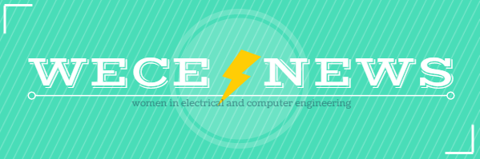

JANUARY 29 - FEBRUARY 5
NEWS
Women in Tech (WIT) Day
Come out to the first-ever Women in Tech (WIT) Day celebrations on Tuesday, January 30th! WIT Day is a joint collaboration between WCS, WECE, and Pulse and it celebrates the accomplishments of women in technology through a full day of events featuring incredible professors, students, and employees. In addition, there will be "women in tech" swag at all events! More information below
Spring 2018 WECE Leadership Opportunities
Looking to get more involved with WECE? Apply for spring positions here! In particular, we're seeking a mentorship program lead. Everyone is welcome to apply. Applications are due on Thursday, February 1st. Contact Stephanie Wang at swang166@illinois.edu if you have any questions.
WECE Resume Book (1 point)
Career fair season is coming up again! If you're still looking for internships or full-time opportunities, submit your resume to the WECE Resume Book here! This will be distributed to interested companies that reach out to WECE.
Back to School Academic Survey (1 point)
Welcome back to campus! Please fill in this form telling us about the classes you're taking, and whether you would be interested in tutoring for the classes you have already taken in the past. You can also add any more suggestions that you have for WECE, or something you'd like to see, or bring to WECE this semester.
E-Week Interest Form
EWEEK is a week-long celebration from Friday, February 16 to Saturday, February 24 that highlights the contributions to society that engineers make. If you'd be interested in joining a WECE team to participate in fun EWEEK activites, please fill out this form
EVENTS
Women in Tech Networking Luncheon (2 points)
Come out to the Women in Tech (WIT) Networking Luncheon where industry employees, researchers, professors, and graduate students will be networking with students at the university over lunch. Food will be provided. Space is limited so please RSVP here! Check out the Facebook event here.
Where: ECEB 3002
When: Tuesday, January 30th 11:00AM-1:00PM
Women in Tech Lean-In (2 points)
Join WCS x WECE for a special Lean-In event where we'll discuss self-care in the technology industry and ways to support women in tech. Check out the Facebook event here.
Where: ECEB 2013
When: Tuesday, January 30th 5:00PM-6:00PM
Women in Tech Lightning Talks (2 points)
What does it feel like to be a woman in tech? Come to our lightning talks where several incredible UIUC researchers, professors, and graduate students share their stories and their work. Bring your curiosity and an open mind to see their perspective! Check out the Facebook event here.
Where: ECEB 1013
When: Tuesday, January 30th 6:00PM-7:00PM
Women in Tech Keynote (2 points)
It takes more than technical knowledge to become a leader in the male-dominated tech industry. It takes a warrior's heart, weapons, and armor. In "Warrior Women", you'll hear their stories and the most important lessons they shared. Through this talk, you'll be inspired and prepared to ignite your power, reach your potential and start dreaming about the ways that you can use tech to change the world.
About the Speaker: Terri Brax is the founder and CEO of TeacherCare, a national education agency, and Women Tech Founders, a leadership organization for Women in Tech. She has been published in Forbes, Chicago Women's Magazine and featured in the Tribune, Crain's and Entrepreneur Magazine, and leads volunteer activities for Children's Charities with her family. Check out the Facebook event here.
Where: ECEB 3002
When: Tuesday, January 30th 7:00PM-8:00PM
Android Development Workshop (2 points)
If you were there at last semester's Android Development workshop, come out to this next one to build upon what you've already learned. If you weren't there, come out anyway and gain mobile development experience! Topic is yet to be determined, but will definitely be new!
Where: TBD
When: Sunday, February 4th 3:00PM-5:00PM
Raspberry Pi Workshop (2 points)
Hack Illinois is just around the corner! It's the perfect time to learn how to set up and use a Raspberry Pi. Join us in this workshop tailored to help you get started on the coolest hack yet. Attendees will have a chance to win a Raspberry Pi!
Where: TBD
When: Sunday, February 18th 3:00-5:00PM
EXTERNAL ANNOUNCEMENTS
Pulse 2018 Competitions
Pulse is an annual student-run conference held at Illinois that showcases innovation in electrical and computer engineering technologies that starts on January 29th. During this year’s conference, PULSE will be hosting a set of competitions that you can compete in for a chance to win some great prizes. The first prompt will be an ideathon hosted by Texas Instruments, and the second prompt will be a design competition hosted by us. Both competitions will run during the week of the conference. For more info, visit pulse.ece.illinois.edu.
Capital One Tabling
Come meet our engineers over coffee, bagels, and snacks. Learn how Capital One is transforming into a cutting edge technology company - and maybe even pick up some cool swag!
Where: Siebel Center Lobby
When: Tuesday, January 30th 10:00AM-2:00PM
Capital One Tech Talk
With events such as the Equifax breach, the Target takeover, and all the information we have about ourselves online, identity fraud is an increasing problem in the financial industry. To combat this, Capital One has developed a Machine Learning Framework to detect fraudsters. Using parallel processing, machine learning models, and an actor system, we are able to make real time decisions. Come learn how fraud happens, how to think through design decisions, and investigate new technology such as AKKA, Scala, and Docker. Dinner will be provided!
Where: SC 2405
When: Tuesday, January 30th 5:30PM-6:30PM
Engineering Career Fair
This semester, EXPO and ECS are working together organize one Engineering Career Fair. We have over 200 companies already registered! This career fair will be taking place from Feb. 6 - Feb. 8. In order for this event to be successful for both students and companies alike, we need your help! Students will assist staff with the execution of the Spring 2018 Engineering Career Fair. There are a variety of tasks that students can volunteer for to ensure the Engineering Career Fair runs smoothly. Students will have the opportunity to connect with employers before, during and after the fair! If you have community service requirements to fulfill, this is a great opportunity to do so! Students can sign up here.
Southwest Research Institute Job Openings
Southwest Research Institute, founded in 1947, is an independent, nonprofit, applied engineering and physical sciences research and development organization dedicated to technology development and transfer. As an international center of excellence in applied research, SwRI® employs highly skilled and trained personnel and offers opportunities for bachelor, master and doctoral level scientists and engineers as well as a large summer internship program. Additionally, they offer entry level and experienced clerical positions and technical support opportunities for individuals with craft, electronics, chemistry, and mechanical skills. Southwest Research Institute has a vigorous recruitment program and they will be visiting UIUC for the career fair on February 7th and follow up on-campus interviews with students February 8th.
Goldman Sachs Exploratory Program
Goldman Sachs' exploratory programs are a great way to learn more about their people, culture, offices and business. They are designed to provide exposure to career paths available in the financial services industry and explore future opportunities. Click here to learn more about their programs.
9th Power and Energy Conference at Illinois (PECI)
The Power and Energy Systems group at the University of Illinois at Urbana-Champaign cordially invites you to attend and present at the 9th Power and Energy Conference at Illinois (PECI) which will be held in the I-Hotel at UIUC on February 22-23, 2018. Graduate student-organized and led, PECI fosters discourse broadly across the electric power and energy disciplines which include, but are not limited to: Power Electronics, Electric Power Systems, Energy Markets, Renewable Energy Technologies, Electric Machines and Drives, System Reliability and Control. More detailed information is available here.
Where: I-Hotel
When: February 22nd-23rd, 2018
CS@Illinois Sail
Sail is an event that brings high school students to experience CS@ILLINOIS for a day, and it needs students like YOU to teach awesome classes! Register as a teacher online here.
  
|